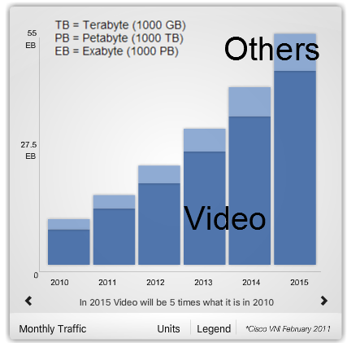
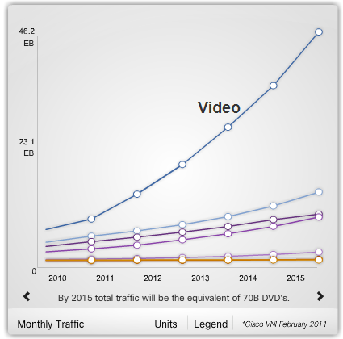
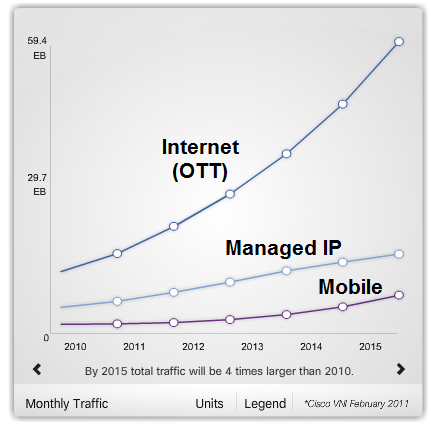
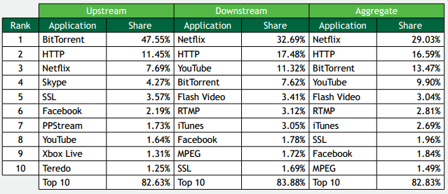
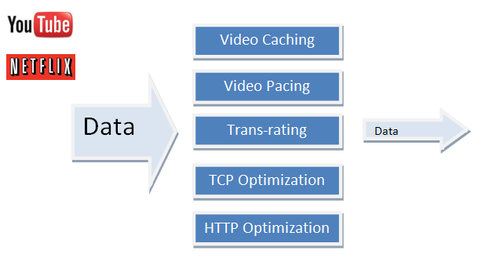

Mobile Video Optimization - Transrating 2017
The mobile network is growing exponentially to carry video, voice, and data applications. The explosive data growth is partly due to an increase in mobile video content use, forcing the mobile network operator to increase network capacity. However, video data delivery has unnecessary bandwidth consumption and degrade the user experience and network performance.


According to the 2011 Sandvine Global Internet Phenomena Report, Netflix creates an estimated 32% of peak downstream traffic, with Netflix streaming video responsible for around 28% of all bandwidth usage alone.
Source: Sandvine - North America, Oct. 2011
While Netflix wins on both bandwidth and median viewing time (42 minutes versus YouTube's 3; YouTube only takes up 11.3% of peak downstream traffic), Google's video hub comes out on top in terms of the size of its monthly audience (83% of all broadband subscribers in the U.S., compared with Netflix's 20%) and percentage of all online video viewing (34.5% versus Netflix's less-impressive 5%).
However, the study found that more people watch Netflix content on an internet-connected television (77% of all Netflix viewing, with 20% watching on a computer and the remaining 3% on a mobile device), while YouTube stays computer-centric (83% watching via computer, 10% on a mobile device and only 7% via television) at a time when web usage in general is moving away from computers and onto mobile devices and web-enabled TVs.
Both Netflix and YouTube is OTT (Over-The-Top) content players. In other words, their on-line delivery of video and audio does not rely on the Internet service provider such as Comcast and Verizon, etc. Though the provider may be aware of the contents of the IP packets, but is not responsible for, nor able to control, the viewing abilities, copyrights, and/or other redistribution of the content. This is in contrast to delivery through purchase or rental of video or audio content (over IP) from the Internet provider, such as Comcast video on demand (over IP) or AT&T; U-Verse video service. The Internet providers are responsible only for transporting IP packets.
Because the OTTs do not own networks, they can't provide customers with QoS. So, they use HTTP PDL (HTTP Progressive Download) or HTTP Adaptive Streaming. While the HTTP Adaptive Streaming can adapt to the state of the network (i.e. bandwidth) between device and streaming server, because the HTTP PDL supposed to download faster than the encoding rate, it has issues whether the bandwidth is larger or smaller.
In HTTP Adaptive Streaming, the client requests a different chunk from the web server after deciding the video quality (resolution, bit-rate, etc) to receive depending on the state of network (download speed) and the state of a device (video rendering capability, screen resolution, state of the screen (background or full screen), etc.). Therefore, it is possible for the user can view the video without any waiting/loading by adapting the video quality to the varying bandwidths.
Because HTTP Adaptive Streaming, unlike the HTTP PDL, does not download the whole file but it get a chunk every two second (it only gets whatever the user need to watch at any moment, HLS for every 10 second), there is no waste of the bandwidth.
Though the HTTP Adaptive Streaming can adjust to the environment, transcoded files should be stored as many as the number of the levels of content quality and with different packaging (HLS-HTTP Live Streaming (Apple), HSS-HTTP Smooth Streaming (Microsoft), and HDS-HTTP Dynamic Streaming (Adobe)). This will increase the cost for the OTTs because of the increase in the expenses of transcoding, packaging, and storage. See DASH (Dynamic Adaptive Streaming over HTTP).
Though the big player like Netflix is using Smooth Streaming, free/small players like Youtube are still stick to the HTTP PDL because of the relatively low cost of PDL(can avoid huge expenses on storage/transcoding).
Delivery of OTT video by PDL is largely done via HTTP over TCP/IP. TCP/IP is unaware of the specific type of payload it is carrying. So, it attempts to deliver the entire video file as fast as possible, regardless of the video's viewing rate. As a result, the user' s video player buffers the video content and plays it at the encoded video viewing rate (e.g., 15 or 30 frames/sec). Such content unaware video delivery causes 2 significant inefficiencies in the network:
- If the user stops viewing the video prematurely, all buffered video content delivered to the device is wasted.
- All concurrent video sessions of multiple users, regardless of viewing rate, equally share the total available bandwidth. Some sessions have more bandwidth than they need while others are bandwidth starved, resulting in poor viewing quality.
| HTTP Adaptive Steaming | HTTP PDL | |
|---|---|---|
| File Format | Microsoft HSS: ismv Apple HLS: ts Adobe HDS: f4f |
FLV, F4V,MP4,MOV,3GP,ASF,WMV |
| Player | Microsoft HSS: Silverlight Apple HLS: iOS/Quicktime Adobe HDS: Flash Player |
Silverlight, Flash Player, Quicktime, NexPlayer, etc. |
| Network Adaptability | Adaptive Bit Rate | None |
| QoS | Continues stream | Depends on the network/device state |
| Bandwidth Usage | No waste of bandwidth | There may be a wasted bandwidth when download speed is greater than the encoding rate |
| Server | Microsoft HSS: Microsoft IIS 7.0 Apple HLS: Web Server Adobe HDS: Flash Media Server |
Web Server |
| OTT's Cost | High: Multi-rate transcoding, multi-protocol packaging, storage | Low: 3-5 video files (240p, 360p, 480p, 720p, and 1080p for YouTube) |
| Telco's Cost | Low | High |
As we can see from the table above, the Telcos need to reduce the waste of Bandwidth caused by the OTTs HTTP PDL.

The widespread availability of HD screen, smartphones like iPhone and Android devices, and the rollout of high-speed 4G networks have brought high-resolution mobile video into the mainstream, leading to an explosion of video traffic.
To leverage user demand for video services, mobile operators are broadening video offerings to include both on-portal video (e.g. VOD, live cameras, ipTV, and mobile TV) and video from OTT (Netflix, YouTube, and Hulu). At the same time, providers are struggling to overcome key technical and business challenges - lowering costs, raising user satisfaction, and more effectively monetizing mobile video services.
Video optimization can be categorized into two groups depending on whether it modifies the original contents or not. One group of optimizing method is to change the patterns of transfering bytes without any changes to the original content, and pacing belongs this group. The other group is transcoding/transrating. While the transcoding may change any parameters of the encoding, the transrating changes the bit-rate.

- Video pacing: Reduce unwatched video downloads.
- TCP optimization: Dynamically adjust TCP parameters to improve throughput.
- Video traffic steering (DPI): Steer only video traffic into video solution to reduce load.
- Online Online transrating: Reduce video bandwidth in real time transrating: Reduce video bandwidth in real time by removing frames.
- Profile management (policy): Select optimal video content based on device user policy, user policy, and network.
- Video streaming: Supports adaptive bit rate streaming.
- Video pacing reduces the bandwidth wasted due to early termination of streams.
- Mobile gateway intercepts HTTP and video meta data describing encoding of video transfer and paces video delivery for for consumption.
- Research indicates that around half youtube streams are terminated early and 93% have no jumps.
More to come...
Ph.D. / Golden Gate Ave, San Francisco / Seoul National Univ / Carnegie Mellon / UC Berkeley / DevOps / Deep Learning / Visualization